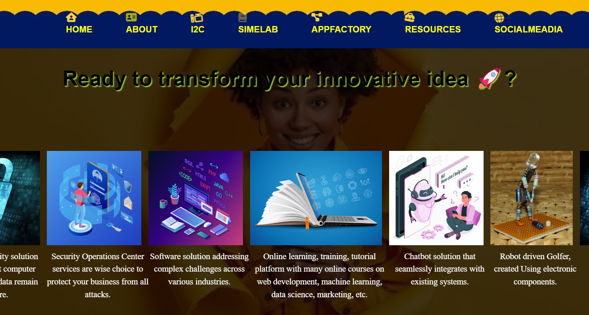
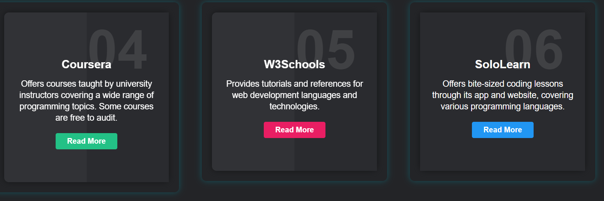
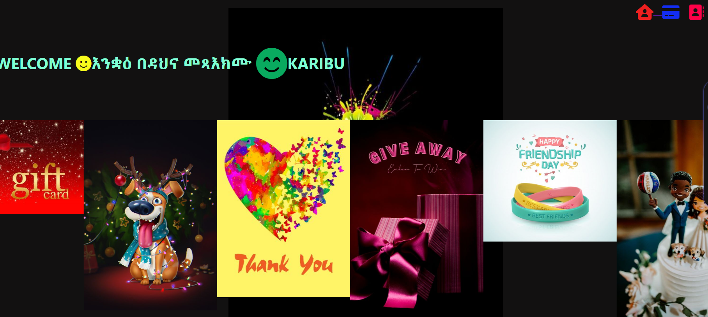
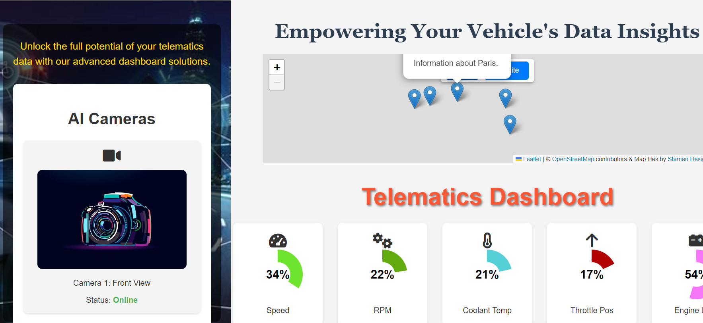
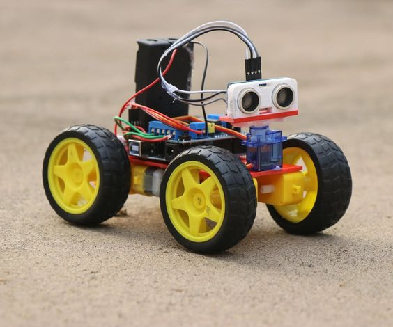

My Projects
 Live Demo
Live Demo
AI-powered Agricultural Assistant developed during my role at Computer Revolution Africa for a county government initiative. It empowers farmers with crop recommendations, irrigation guidance, and real-time chatbot support.
Technologies used: Python, Machine Learning, Streamlit, OpenWeather API, Pandas, Sklearn, Chatbot NLP.
GitHub SourceInteractive language-learning platform with ML-driven translation, lessons, quizzes, and an AI chatbot.
Languages: English to Amharic translation; English, French, Spanish resources.
BLEU Score: 38.05
Tech: ML, NLP, Python, Flask, Hugging Face, Web Dev.
GitHub Source Live Demo Live Demo
Live Demo
ML-driven application that predicts the compressive strength of concrete based on material compositions using Ridge & Lasso Regression. Helps engineers estimate concrete strength efficiently.
Technologies used: Python, Streamlit, Machine Learning, Ridge & Lasso Regression.
GitHub Source Live Demo
Live Demo
An intelligent web application that helps users plan meals based on their dietary preferences, health conditions, and fitness goals. Built using Flask and Python for personalized meal plans and health-based recommendations.
Technologies used: Python, Flask, HTML, CSS.
GitHub Source Live Demo
Live Demo
AI-powered platform that adapts to user performance and provides personalized learning experiences using adaptive difficulty, speech-to-text input, and real-time analytics.
Technologies used: Python, Streamlit, SQLite, SpeechRecognition, Matplotlib, Pandas.
GitHub Source
Smart, web-based health assistant that leverages a knowledge-based system to detect symptoms of cervical cancer and recommend timely action for underserved communities.
Technologies used: Python, Knowledge-Based System (KBS), Web Development.
GitHub Source
A rule-based knowledge system for initial health assessment and advice based on symptoms entered by users. Designed for regions with limited access to health professionals.
Technologies used: Python, Prolog, CLIPS, Expert System Shell, Tkinter.
GitHub Source Visit Site
Visit Site
AI-integrated platform focused on combating malnutrition in children under 5 years old. Provides personalized meal plans and nutritional guidance to improve health outcomes.
Technologies used: AI, Machine Learning, Web Development.
Detailed InsightsA comprehensive tool for managing song lyrics with features for adding, deleting, and updating lyrics. Includes a search function for quick access to desired lyrics.
Technologies used: Java, Gradle, HTML, JavaScript.
Detailed Insights
Visit SiteHosted a dynamic website for an Innovation and Incubation Center, showcasing its activities, projects, and innovation initiatives. Designed to facilitate collaboration and showcase cutting-edge solutions.
Technologies used: HTML, CSS, JavaScript, Web Hosting.
Detailed Insights
An Android application developed for the Innovation and Incubation Center, providing users with access to center activities, updates, and innovations on mobile devices.
Technologies used: Android SDK, Java, Mobile Development.
Detailed InsightsEmbark on a journey through the rich tapestry of African culture and history with our immersive platform. Discover fascinating stories, traditions, and heritage that span across diverse landscapes and civilizations.
Technologies Used: HTML, CSS, JavaScript, React
Detailed Insights
Visit SiteCreate personalized wishes and cards for your loved ones with our innovative Wishing and Card Generator Website. Whether it's a birthday, anniversary, or special occasion, express your sentiments in style with our easy-to-use platform.
Technologies Used: HTML, CSS, JavaScript
Detailed Insights
Visit SiteTelematics Dashboard Design: An interactive dashboard featuring animated pie charts to visualize vehicle metrics like speed, RPM, and fuel level. Uses real-time data updates and dynamic colors for engaging user experience. Responsive design for various devices.
Technologies Used: HTML, CSS, JavaScript, Chart.js
Detailed Insights
Explore the fundamentals of robotics with our Path Planning and Obstacle Avoidance project. This initiative simplifies complex concepts, offering hands-on experience in navigating and avoiding obstacles with robotic systems.
Technologies Used: Python, ROS, OpenCV
Detailed InsightsMy Services
Crafting clean, responsive, and user-friendly websites tailored for diverse audiences.
With a passion for inclusive and meaningful design, I specialize in creating web experiences that are not only aesthetically appealing but also purposeful and user-centric. Using tools like Figma and CSS frameworks, I ensure that each design adapts to the user's context and inspires action. My work aims to reflect both beauty and functionality.
Building scalable, intuitive apps and systems that solve real-world problems.
From full-stack mobile and web apps to backend APIs, I develop solutions using Python, Flask, Firebase, and more. My focus is on purpose-driven development—particularly for education, health, and social impact sectors. I aim to create reliable systems that remain usable even in low-resource environments.
Designing expert systems for health diagnostics, tutoring, and smart decision-making.
Leveraging technologies like Prolog, CLIPS, and Python rule engines, I build expert systems that provide intelligent support in areas like health, education, and agriculture. These tools are tailored for communities with limited access to experts, enabling empowerment through smart automation.
Creating AI-powered websites that interact with users and provide real-time assistance.
I develop chatbot-integrated platforms that simulate human conversation to support users, especially in education and customer engagement contexts. Using technologies like Dialogflow and natural language processing, these systems offer smart, scalable, and accessible digital communication.
Leadership & Community Impact
🌟 Leadership
I founded BreakFree, a grassroots platform empowering disadvantaged children and women through education, digital skills, and technology. As founder and project lead, I’ve mobilized volunteers, built partnerships, and led projects from concept to launch.
🤝 Volunteering
I’ve volunteered as an AIESECer and mentor, focusing on digital literacy and youth empowerment. My work was recognized by the Women’s Affairs Office in Adigrat for supporting girls’ education and resilience.
🌍 Community Projects
- NourishKids: Web platform tackling childhood malnutrition using AI-powered meal planning and impact dashboards. Explore NourishKids
- NourishKidsAgri: AI farming assistant for smallholder farmers with crop recommendations and irrigation advice. Try NourishKidsAgri
- Souls for Success: Mental wellness and reintegration program supporting vulnerable young women (Millennium Fellowship 2024).
- Tech-Enhanced Learning Spaces: Partnered with Mastercard Foundation and USIU-Africa to renovate classrooms, provide PCs, and train students in digital skills.

🏅 Certifications & Recognition


Skills
Programming Languages
Proficient in Python, Java, C, and C++ with hands-on application in AI systems, backend APIs, and academic projects involving data-driven logic and algorithms.
Web & Mobile Development
Experienced in HTML, CSS, JavaScript, PHP, and Streamlit for responsive interfaces. Familiar with Flask, Firebase, and low-code tools like Power Platform for rapid development. Prototyping skills in Figma for UI/UX workflows.
AI, Machine Learning & Data Science
Built AI-powered systems using scikit-learn, NumPy, and Pandas. Applied Ridge/Lasso regression in predictive analytics. Created intelligent tutors and diagnostic systems with rule-based reasoning.
Frameworks & Libraries
Hands-on experience with Flask, Streamlit, Laravel, React, and Lumen. Used in deploying scalable education platforms, expert systems, and tech-for-good solutions.
Knowledge-Based Systems (KBS)
Developed rule-driven systems for healthcare and education domains using Python logic engines. Working knowledge of Prolog, CLIPS, and KBS architecture design.
Cloud Platforms & Deployment
Proficient in deploying solutions via Azure, Vercel, Render, and Streamlit Cloud. Experience integrating GitHub workflows for CI/CD and rapid iteration.
Currently Exploring
Learning advanced NLP, speech technology integration, and human-centered design to build educational AI tools that are accessible offline and impactful in low-resource settings.
Leadership, Volunteering & Community Engagement
Demonstrated leadership through founding BreakFree and NourishKids, coordinating cross-functional teams, managing grassroots social ventures, and scaling digital solutions for education, nutrition, and mental health. As an AIESECer, student mentor, and MCN2024 Fellow, I’ve mobilized youth for impact, built community resilience post-conflict, and led initiatives in digital literacy, mental wellness, and girls’ empowerment.
Contact Me
Whether you have a question, want to collaborate, or just want to say hello, feel free to reach out. I look forward to hearing from you!